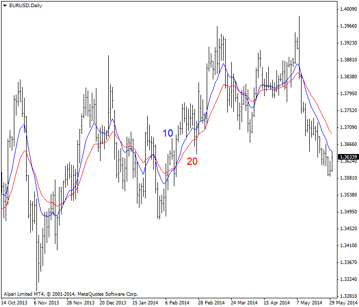
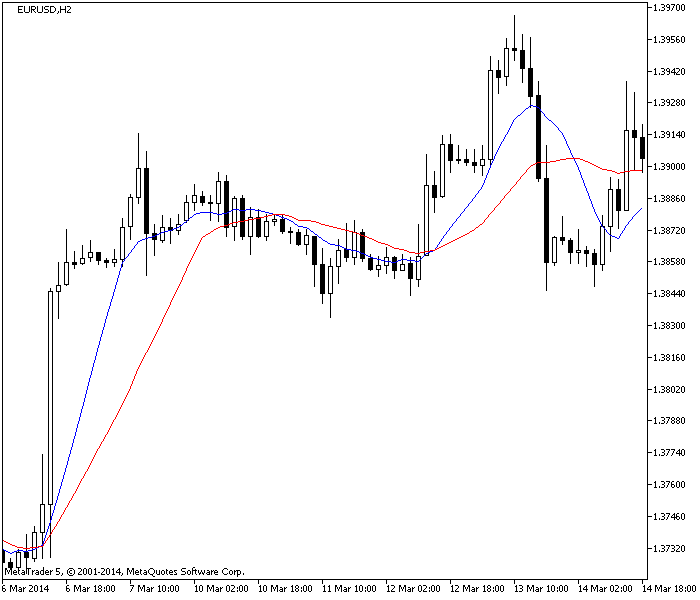
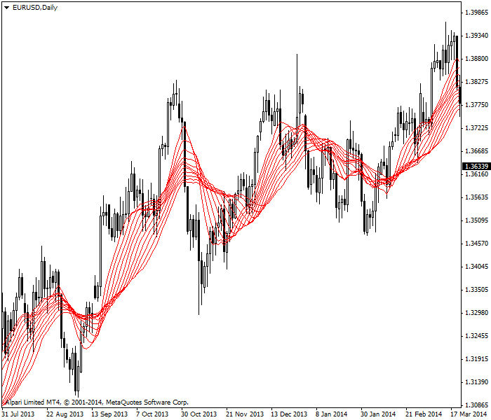

<!DOCTYPE html>
<html>
</html>
<head>
  <meta charset="utf-8">
  <meta http-equiv="X-UA-Compatible" content="IE=edge">
  <title>外汇站（fx-z.com） - 移动平均线交叉点</title>
  <meta name="description" content="">
  <meta name="viewport" content="width=device-width, initial-scale=1">
  <meta name="robots" content="all,follow">
  <!-- Bootstrap CSS-->
  <link rel="stylesheet" href="vendor/bootstrap/css/bootstrap.min.css">
  <!-- Font Awesome CSS-->
  <link rel="stylesheet" href="vendor/font-awesome/css/font-awesome.min.css">
  <!-- Google fonts - Roboto-->
  <link rel="stylesheet" href="https://fonts.googleapis.com/css?family=Roboto:400,300,700,400italic">
  <!-- owl carousel-->
  <link rel="stylesheet" href="vendor/owl.carousel/assets/owl.carousel.css">
  <link rel="stylesheet" href="vendor/owl.carousel/assets/owl.theme.default.css">
  <!-- theme stylesheet-->
  <link rel="stylesheet" href="css/style.default.css" id="theme-stylesheet">
  <!-- Custom stylesheet - for your changes-->
  <link rel="stylesheet" href="css/custom.css">
  <!-- Favicon-->
  <link rel="shortcut icon" href="img/favicon.png">
  <!-- Tweaks for older IEs--><!--[if lt IE 9]>
    <script src="https://oss.maxcdn.com/html5shiv/3.7.3/html5shiv.min.js"></script>
    <script src="https://oss.maxcdn.com/respond/1.4.2/respond.min.js"></script><![endif]-->
</head>
<body>
  <div id="all">
    <div class="container-fluid">
      <div class="row row-offcanvas row-offcanvas-left"> 
        <!--   *** SIDEBAR ***-->
        <div id="sidebar" class="col-md-4 col-lg-3 sidebar-offcanvas">
          <div class="sidebar-content">
            <h1 class="sidebar-heading"> <a href="https://fx-z.com">fx-z.com</a></h1>
            <p class="sidebar-p">介绍外汇相关的基本知识，告诉您如何进行自己的技术面和基本面分析，讲解先进的交易理念，并且为您阐述失败交易者与专业交易者之间的真正区别。 </p>
            <p class="sidebar-p">通过这些课程的学习，您将学会如何根据自己的优势来应用情绪分析，还将了解真实世界的事件会对货币汇率产生什么影响，央行在外汇市场中所发挥的作用，以及交易者在颇受欢迎的即期外汇交易中有哪些选择方案。 </p>
            <ul class="sidebar-menu">
                <!-- Link-->
                <li class="sidebar-item"><a href="https://fx-z.com" class="sidebar-link">首页</a></li>
                <!-- Link-->
                <li class="sidebar-item"><a href="cihui.html" class="sidebar-link">外汇词汇</a></li>
                <!-- Link-->
                <li class="sidebar-item"><a href="ebook.html" class="sidebar-link">获取外汇电子书</a></li>
            </ul>
            <p class="social"><a href="https://www.forextimechina.com.cn/zh?form=IZIN" target="_blank"data-animate-hover="pulse" class="external facebook"><i class="fa fa-eur"></i></a><a href="https://www.forextimechina.com.cn/zh?form=IZIN" target="_blank" data-animate-hover="pulse" class="external gplus"><i class="fa fa-gbp"></i></a><a href="https://www.forextimechina.com.cn/zh?form=IZIN" target="_blank" data-animate-hover="pulse" class="external twitter"><i class="fa fa-rmb"></i></a><a href="https://www.forextimechina.com.cn/zh?form=IZIN" target="_blank" title="" class="external instagram"><i class="fa fa-dollar"></i></a><a href="https://www.forextimechina.com.cn/zh?form=IZIN" target="_blank" data-animate-hover="pulse" class="email"><i class="fa fa-money"></i></a></p>
            <div class="copyright text-center text-md-left">
             
              
            </div>
          </div>
        </div>
        <!--   *** SIDEBAR END ***  -->
        <!--   *** DETAIL ***-->
        <div class="col-md-8 col-lg-9 content-column white-background">
          <div class="small-navbar d-flex d-md-none">
            <button type="button" data-toggle="offcanvas" class="btn btn-outline-primary"> <i class="fa fa-align-left mr-2"></i>菜单</button>
            <h1 class="small-navbar-heading"> <a href="https://fx-z.com/8-3.html">下一篇 </a></h1>
          </div>
          <div class="row">
            <div class="col-xl-10">
              <div class="content-column-content">
                <h1>移动平均线交叉点</h1>
       <p>
    与只观察原始图表相比，结合移动平均线进行观察可以让您更好地了解价格动向。如前一课所述，价格在移动平均线上的交叉点是一项有效的交易规则，但它可能带来严重的双重损失。您可以通过两条移动平均线的交叉点获得更好的买入、卖出交易信号。通过两条移动平均线，而不是价格在移动平均线上的交叉点，可以减少双重损失。您仍会遭受损失，但幅度会降低。
</p>
<p>
    一个经典示例是，当 10 日移动平均线上穿 20 日移动平均线时，您应该买入。当 20 日移动平均线下穿 10 日移动平均线时，您应该卖出。自 1979 年以来，我们一直观察这组移动平均线在多个外汇图表组合上的表现，可以肯定它大部分时候是一项反映外汇价格方向变化的可靠指标。有些技术分析将这种交叉点称为“突破”。
</p>
<p>
    以下示例图显示蓝色 10 日移动平均线与红色 20 日移动平均线对抗。本图中有五个交叉点，而且其中一个交叉点显然即将出现于价格数据结束时。图表中央有一段区间颇为有趣；蓝色 10 日移动平均线上升至 20 日移动平均线附近，但未能真正越过这条线。此图表上的每项交易均有利可图。但是，请注意，这段时间内的大多数图表至少面临着一次或两次双重损失。
</p>
<p>
    10 日移动平均线与 20 日移动平均线交叉点图表示例
</p>
<p>
    有一项外汇交易知识是，如果价格突破 10 时段移动平均线，它将继续密切接近 20 日移动平均线。我们无法验证这项知识所依据的历史数据，但有些交易者依赖于它，总是在价格越过 10 日移动平均线，而盈利目标与 20 日移动平均线相距若干点时卖空货币。
</p>
<p>
    您可以自由地尝试其他移动平均线组合，尤其是当 20 时段移动平均线造成大幅双重损失时。将它增加至 22 个时段。有些交易者试图通过一些奇怪的组合，例如 7 和 13、15 和 30，来游戏市场。请意识到，没有哪种货币或所有外汇价格存在神奇的组合。所有移动平均线组合均能带来双重损失，而且它们全部滞后于真正的价格活动。
</p>
<p>
    <strong>同样具有分形特质</strong>
</p>
<p>
    10 日移动平均线与 20 日移动平均线的组合是日线图上的经典组合。您使用的图表周期可能是每日、4 小时和 1 小时。请注意，20 时段可在所有时间周期（甚至是 1 小时）上发挥着神奇的属性。如果您不再思考这件事，那么它不是很神秘。5 天是一周交易日。10 天是两周。20 天不足一个月（22 个交易日），但已经大致接近一个月。在每小时图表上，20 时段接近完整的 24 小时。由于某种原因，价格与 20 时段移动平均线紧密相关，而且价格对这条线的突破通常具有真正的价值，不仅是因为您了解，在包含两条移动平均线的交易系统中，价格将拖累 10 日移动平均线下行（除非低点位置出现异常飙升）。有时，价格会在距离 20 时段移动平均线仅一两点的位置被击退。这种情况的发生并非偶然。
</p>
<p>
    重要之处在于，您能够获得一个可完全接受的交易系统，且系统中的两条移动平均线体系适用于任何时间周期。请查阅以下图表；它显示两小时（120 分钟）时间周期上的 EUR/USD。我们再次见到蓝色 10 时段均线在图表左侧上穿 20 时段均线，然后出现一个下行交叉点，然后恢复上升走势。应注意，直到经过最高点 4 个时段之后，价格才穿过 10 日均线，而且，又经过 4 个时段之后，10 日移动平均线才越过 20 移动平均线，或者延迟 16 小时才获得确认的卖出信号。
</p>
<p>
    2 小时时间周期上的10 日移动平均线与 20 日移动平均线交叉点图表示例
</p>
<p>
    经历双重损失之后，使用移动平均线交叉点交易体系的最大问题是——它的滞后性。实际上，几乎所有技术指标都有一些滞后性，但移动平均线的滞后性最为严重。
</p>
<p>
    <strong>移动平均线缎带</strong>
</p>
<p>
    为什么不将一连串移动平均线都置于同一张图表中呢？这一理念由 Daryl Guppy 提出，被称为移动平均线缎带。下图展示了这一理念。图上共有 12 条移动平均线，每条都整理了固定数量的点位于 20 日移动平均线以上或以下。
</p>
<p>
     由 12 项移动平均线指标组成的缎带
</p>
<p>
    当我们关注移动平均线缎带时，与交叉点相比，我们对不同移动平均线之间的间隔更感兴趣。当移动平均线趋于收敛并互相靠近时，交易者几乎就走向达成了共识。当移动平均线平行时，一致的共识已经达成。但是当移动平均线出现背离且趋于分散时，交易者对这种货币的观点出现分歧——而且其中一种观点将是正确的。
</p>
<p>
    通过上图可以看到，图表左侧的移动平均线之间有许多白天时间。价格已大幅下跌，但缎带线依然分散——因为交易者并未达成一致。果然，上涨走势重新回归，而且图表中央的缎带线非常接近且趋于平行。此时，价格已经远高于所有移动平均线，而且缎带已经收紧至一团紧贴在一起的线条。如果您已经建仓，而且非常厌恶风险，那么最狭窄的点正是建立信心的点，说明在此处买入较为明智。而且之后，这一决策将由创下新高的价格证实。
</p>
<p>
    移动平均线缎带是一个有趣的理念。它或许更适合作为一项情绪指标，而不是交易指南。
</p>
<p>
    <strong>您知道吗？</strong>
</p>
<p>
    在股市中，图表分析专家提出了这样一个观点，认为 100 日移动平均线（略多于一个季度）与 200 日移动平均线（近一年的数据，营业年度实际上约有 240 天）是重要的数据。如果您对任何主要股票指数（例如标普 500 指数）进行回测，您会发现这些神奇的数字实际上并不重要，但这不是关键——许多交易者相信它们重要，而且会遵循它们操作。关于 200 日移动平均线，我们可以说 200 日移动平均线的最佳用途是它的“长期性”。
</p>
<p>
    <br/>
</p>
<p>
    现在介绍一些愚蠢的内容。当 100 日移动平均线上穿 200 日移动平均线时，它被称为“金叉”，可作为一项买入信号。当 100 日移动平均线下穿 200 日移动平均线时，它被称为“死叉”，可作为一项卖出信号。这两种言论在股市和外汇市场中都是谬论；我们是指没有历史数据的实证能够证明这些交叉点与重要的转折点相关，但要记住的是，不是所有人都认为这是谬论。
</p>
<p>
    <br/>
</p>
<p>
    <br/>
</p>
              </div>
            </div>
          </div>
        </div>
      </div>
    </div>
  </div>
  <!-- JavaScript files-->
  <script src="vendor/jquery/jquery.min.js"></script>
  <script src="vendor/popper.js/umd/popper.min.js"> </script>
  <script src="vendor/bootstrap/js/bootstrap.min.js"></script>
  <script src="vendor/jquery.cookie/jquery.cookie.js"> </script>
  <script src="vendor/owl.carousel/owl.carousel.min.js"></script>
  <script src="vendor/masonry-layout/masonry.pkgd.min.js"></script>
  <script src="js/front.js"></script>
</body>